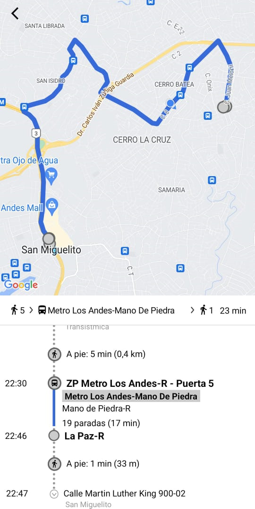
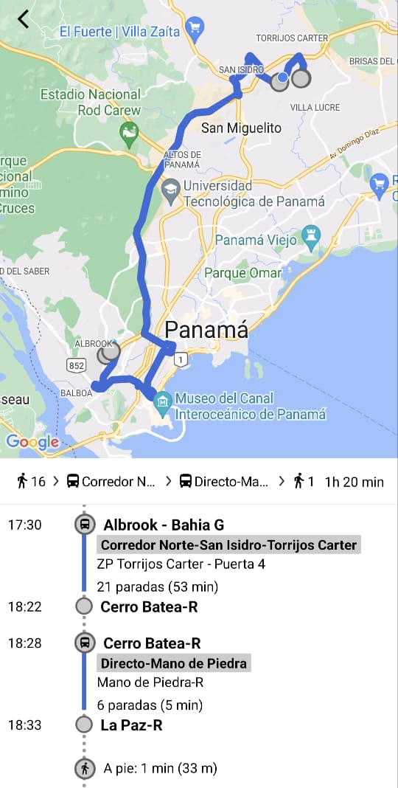

Ubicación:
Panamá, San Miguelito, Mano de Piedra, La Paz, Iglesia Adventista de Peniel Frente a la capilla la medalla milagrosa
Cómo llegar en Transporte Público:
Opción 1: Desde Albrook Mall o San Miguelito tome el Metro o Bus hasta la estación de Los Andes, En la Caseta del metro bus, debe encontrar el letrero que dice Mano de Piedra o pregunte donde se toman los buses de la ruta en la caseta, puede tomar cualquier Bus de Mano de Piedra, mejor si es Directo, debe bajarse en la parada La Paz-R, al bajarse del bus a su espalda estará la Iglesia. Costo - Metro: 0.35 - Bus: 0.25 - Total: 0.60
Opción 2: Desde Albrook mall Tome un corredor de Mano de Piedra y se baja en la parada La Paz-R Costo – Bus Corredor: 0.75 - Total: 0.75
Opción 3: Desde Albrook mall Tome un corredor de Torrijos Carter, debe bajarse en la parada Cerro Batea-R para hacer un trasbordo de la ruta de Mano de Piedra y se baja en la parada La Paz-R Costo – Bus Corredor: 0.75 - Bus: 0.25 - Total: 1.00
Opción 4: Desde Los Andes tome un Uber o InDrive escriba la palabra ‘La Paz-R’ Costo – Uber: 4.00 Aprox. - InDrive 3.00 Aprox. Nota: verifique que sea en San Miguelito
Opción 5: Desde Los Andes tome un Taxi Con Dirección a Mano de Piedra, Calle Principal, La Paz, Iglesia Adventista de Peniel Costo – Taxi: 3.50 a 5.00 Aprox - Nota: no pague más de 5 dólares
Opción 6: Desde Los Andes tome una chiva o Coster de Torrijos Carter, pregunte antes de subir si pasa por Mano de Piedra, si no pasa ni se suba, hágase cerca del secretario designado que va anunciando las paradas, este atento a la parada llamada Chávez unas cuantas paradas después se encuentra la parada de la iglesia de Peniel llamada La Veinte (La 20) Costo – Chiva: 0.50 - Busitos: 1.50 - Nota: este atento a las paradas